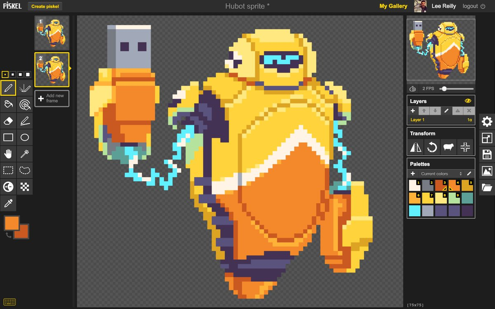
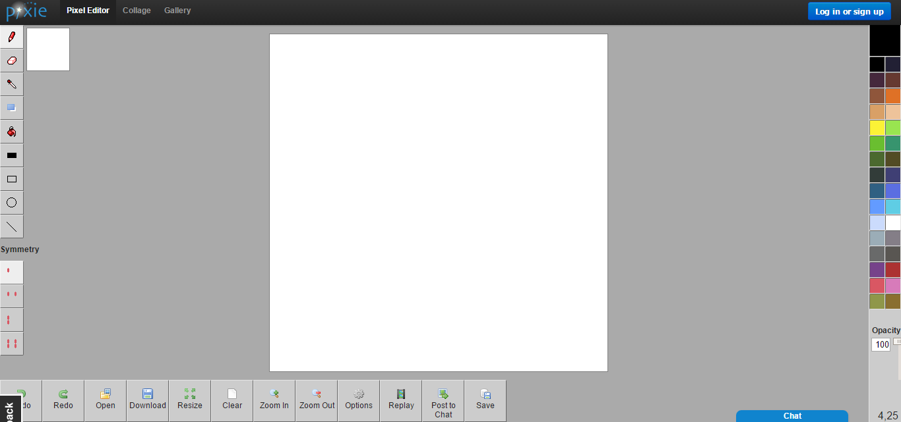
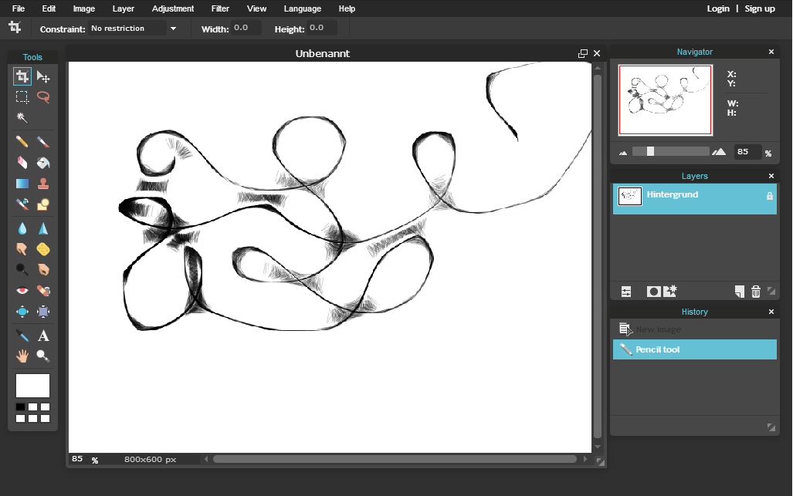
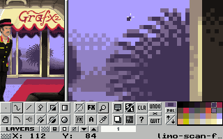
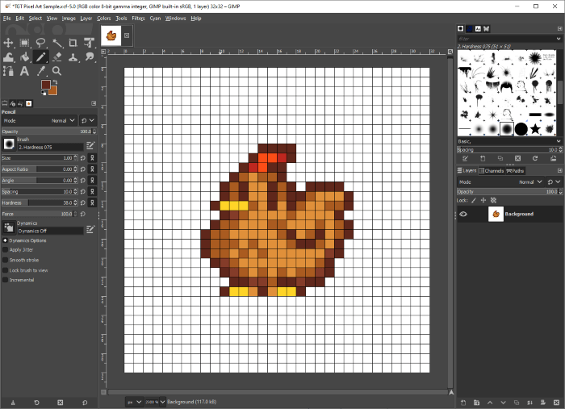

PiskelApp

PiskelApp is a free online pixel editor with an emphasis on sprite creation. It allows you to save your pixel art online and also has an import function so you can use it to edit your existing pixel art. PiskelApp has a simple user interface and is a great choice if you want to dive right into creating your sprite sheet.
Pixie

Pixie is another fully functional online pixel editor. Although it’s not as well suited to sprite sheet creation as PiskelApp, it’s still very easy to use and is a good choice for anyone looking to let their imagination run wild. The white canvas is the standard starting point for this tool and encourages free hand drawing rather than rigid grid designs.
Pixlr

Pixlr is a slightly more advanced pixel editor in comparison to the previous editors with a large range of drawing tools. It offers the same online saving feature as PiskelApp but isn’t as well suited to sprite sheet creation. If you want to avoid the 16-bit style that PiskelApp encourages, check out this tool instead.
GrafX2

GrafX2 is a bitmap paint program that includes a number of tools and effects that make it especially useful for designing game graphics, pixel art and sprite sheets. It’s free to download and available on all major desktop platforms
GIMP

GIMP is an open source image editor for desktop that can be used for everything from photo manipulation to creating original artwork. You can also use GIMP to create your pixel art and sprite sheets. Although there is a bit of a learning curve for beginners, GIMP is a powerful tool that can cater for almost all image editing needs.